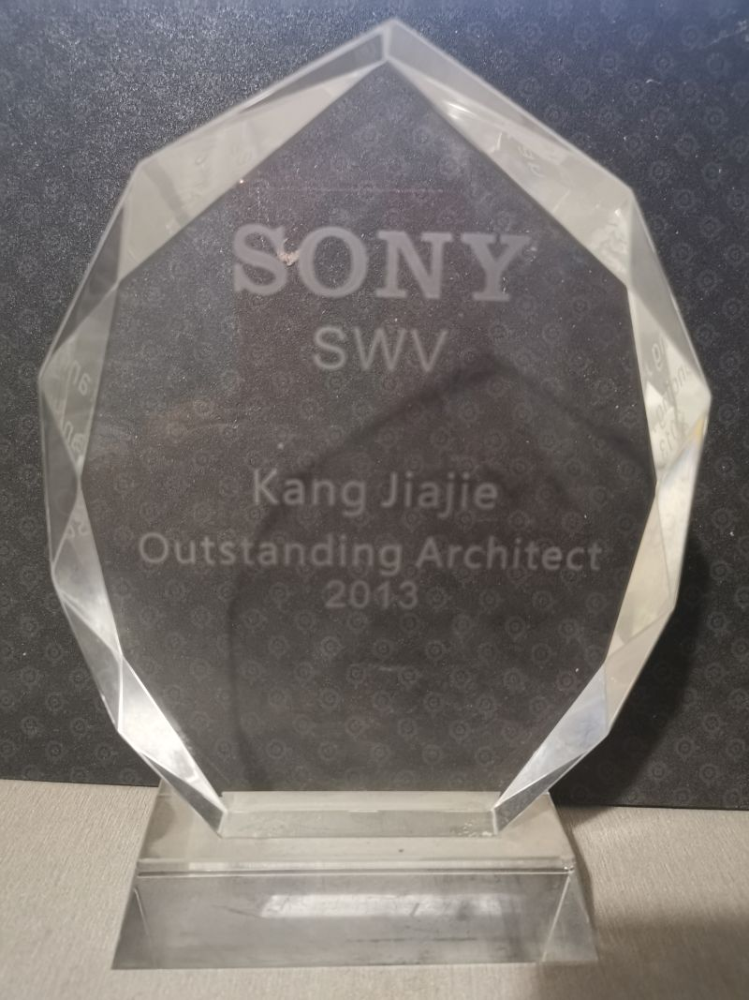

• 为国际手机充值交易提供故障排除支持。 • 解决客户报告的与 API 集成相关的问题。 • 开发和更新合作伙伴集成模块的代码。 • 分析 API 交易日志以识别和解决客户问题。 • 创建定制查询以满足客户对产品和价格清单信息的要求。
• 向客户提供售前技术指导和产品演示。 • 为签订合同的地图产品提供技术支持。 • 为客户与地图 API、SDK 和离线数据相关的需求提供解决方案。 • 开发工具以帮助客户进行地图数据处理。 • 创建定制的地图渲染网站以进行产品演示。 • 协助客户开发人员调试代码并识别问题的根本原因。
• 创建系统测试的测试用例，包括性能、功耗和稳定性测试。 • 简化测试方法和范围以降低成本。 • 设计、增强和利用自动化测试工具。 • 开发并实施回归测试工具以提高效率。 • 在测试用例管理中建立测试流程，以实现有效的成本管理。 • 领导隆德（瑞典）和东京（日本）的验证团队进行接口测试。 • 通过培训提高测试团队的知识和技能。
我专注于开发和增强 Symbian 生态系统的工具，从而促进诸如构建、集成、定制、测试和发布 Symbian OS/应用程序等任务。 这些工具是 Symbian SDK 的组成部分。 此外，我在设计和构建云环境以自动化 BITR（构建、集成、测试和发布）作业方面发挥了关键作用。
我带领测试团队进行各种测试，包括功能、回归、系统、基于风险和探索性测试。 我担任测试人员和开发人员之间的协调员，促进错误识别、验证和解决。 此外，我还创建了测试计划、设计了测试用例并交付了全面的测试报告。
作为一名初级开发人员，我为企业本地通信软件编写代码，专注于音频和视频功能。
专业：计算机网络
专业：计算机科学与技术
我有为软件产品和服务提供技术支持的经验。我可以帮助您解决与 API 集成、SDK 和地图数据处理相关的问题。
我有软件测试经验，包括系统测试、性能测试和稳定性测试。我可以帮助您设计测试用例并简化测试方法。
我有开发自动化测试工具和增强现有工具的经验。我可以帮助您设计和实施工具以提高效率并降低成本。
